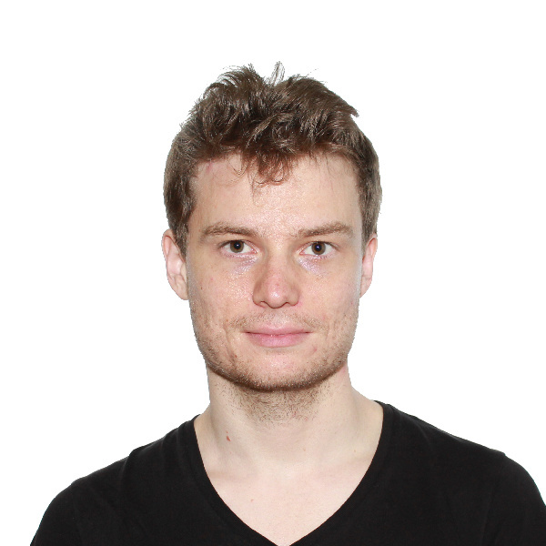

Hi, I'm Peter Karkus.
Research Scientist @ NVIDIA Research
pkarkus@nvidia.com | Google Scholar | LinkedIn | GitHub
Previously:
- PhD Candidate, Research Assistant @ National University of Singapore
- Research Intern @ DeepMind,
- Research Intern @ Google Brain
- Visiting Researcher @ MIT CSAIL
- Fulbright Visiting Researcher @ CMU Robotics Institute
- Intern @ NTT Basic Research Lab
I am a researcher in machine learning and robotics with a long-term vision of building human-level robot intelligence. My research focuses on autonomous vehicles and embodied AI that combines learning with structure and reasoning. My recent works are on neural networks that encode classic robot algorithms in order to learn partially observable planning, visual navigation, localization, and mapping tasks.
Interests: reinforcement learning, neural networks, embodied AI, autonomous vehicles, planning, robot control, visual navigation.
Selected papers
- DiffStack: A Differentiable and Modular Control Stack for Autonomous Vehicles [pdf] [website] [code] Conference on Robot Learning (CoRL), 2022
- Differentiable SLAM-net: Learning Particle SLAM for Visual Navigation [pdf] [website] [talk] Conference on Computer Vision and Pattern Recognition (CVPR), 2021
- Beyond Tabula-Rasa: a Modular Reinforcement Learning Approach for Physically Embedded 3D Sokoban [pdf] [website] arXiv preprint arXiv:2010.01298, 2020
- Differentiable Mapping Networks: Learning Structured Map Representations for Sparse Visual Localization [pdf] [website] [talk] International Conference on Robotics and Automation (ICRA), 2020
- Discriminative Particle Filter Reinforcement Learning for Complex Partial Observations [pdf] [code] International Conference on Learning Representations (ICLR), 2020
- Particle Filter Recurrent Neural Networks [pdf] [code] AAAI Conference on Artificial Intelligence (AAAI), 2020
- Differentiable Algorithm Networks for Composable Robot Learning [pdf] [talk] Robotics: Science and Systems (RSS), 2019 Best Student Paper Nomination. Best System Paper Nomination.
- Factored Contextual Policy Search with Bayesian Optimization [pdf] International Conference on Robotics and Automation (ICRA), 2019
- Particle Filter Networks with Application to Visual Localization [pdf] [code] Conference on Robot Learning (CoRL), 2018
- QMDP-Net: Deep Learning for Planning under Partial Observability [pdf] [code] Advances in Neural Information Processing Systems (NeurIPS), 2017
- Recursive Constraint Manifold Subsearch for Multirobot Path Planning with Cooperative Tasks [pdf] Annual Symposium on Combinatorial Search (SOCS), 2016
- Generation of entangled photons using an arrayed waveguide grating [pdf] Journal of Optics 19(12), 2017
- On-Chip Generation and Demultiplexing of Quantum Correlated Photons Using a Silicon-Silica Monolithic Photonic Integration Platform [pdf] Optics Express 22(19), 2014